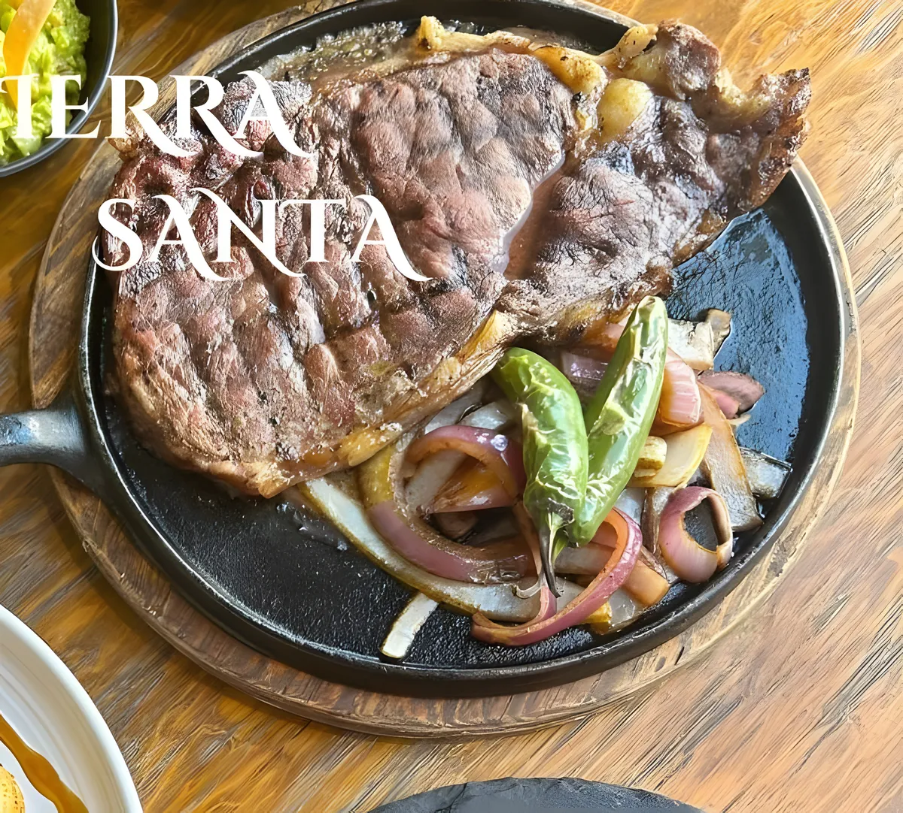
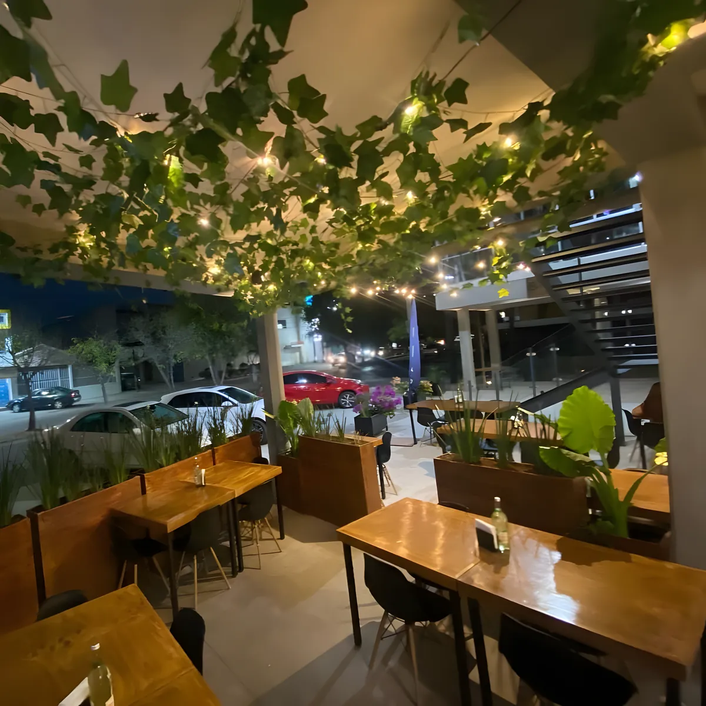
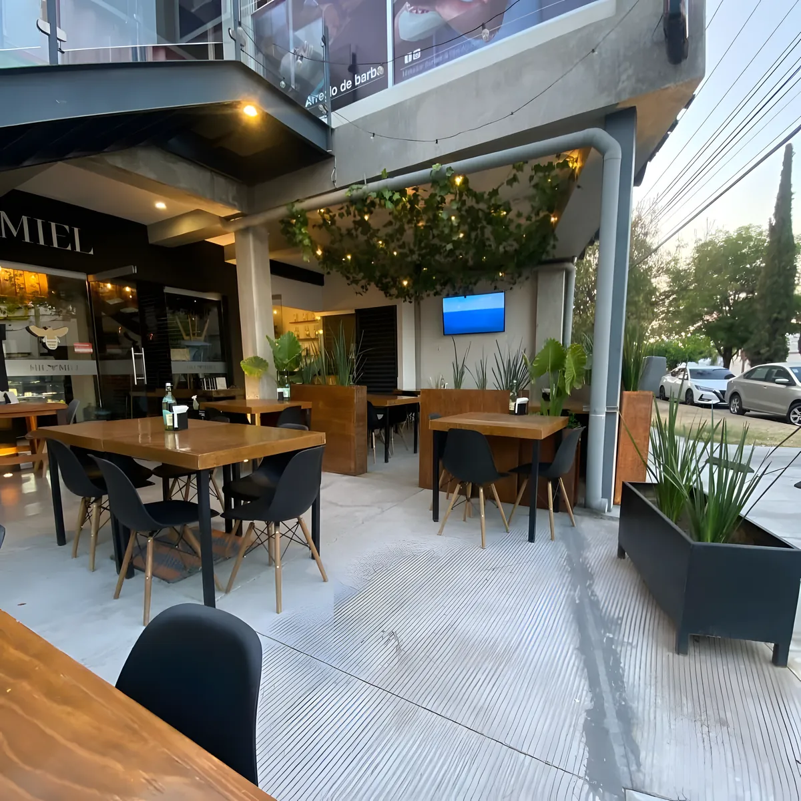
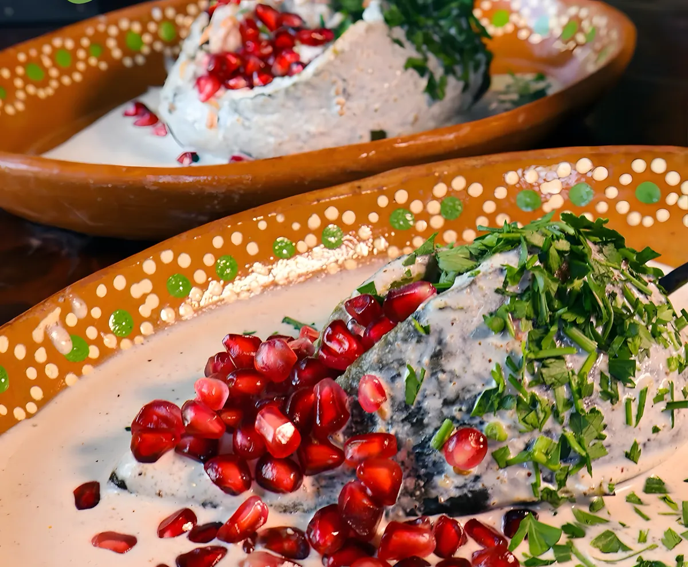
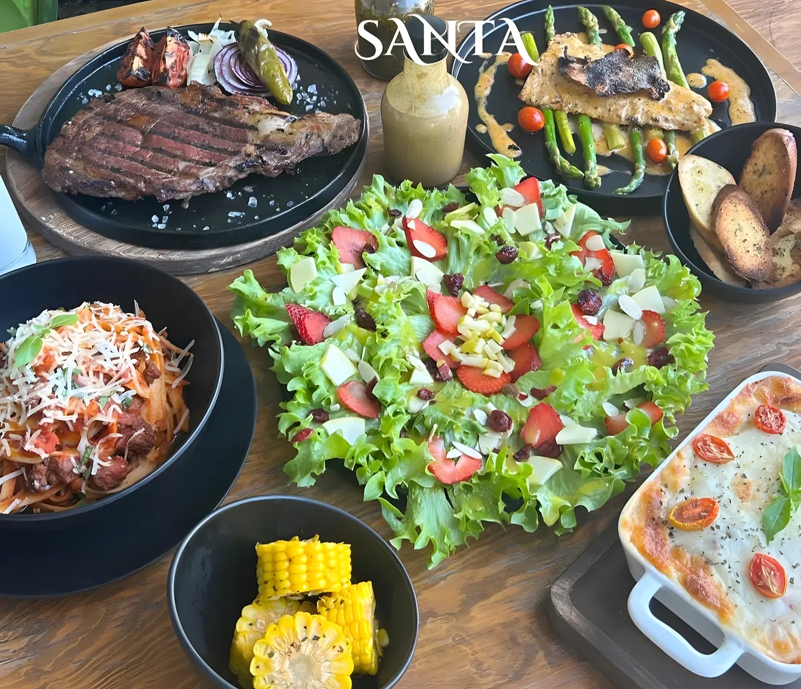
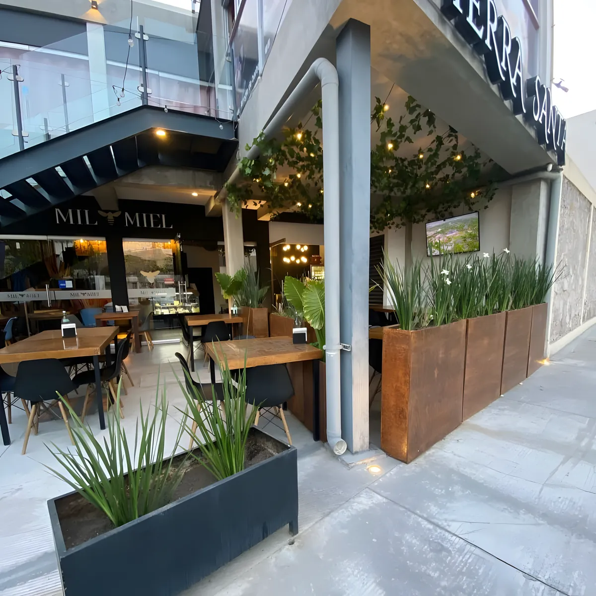
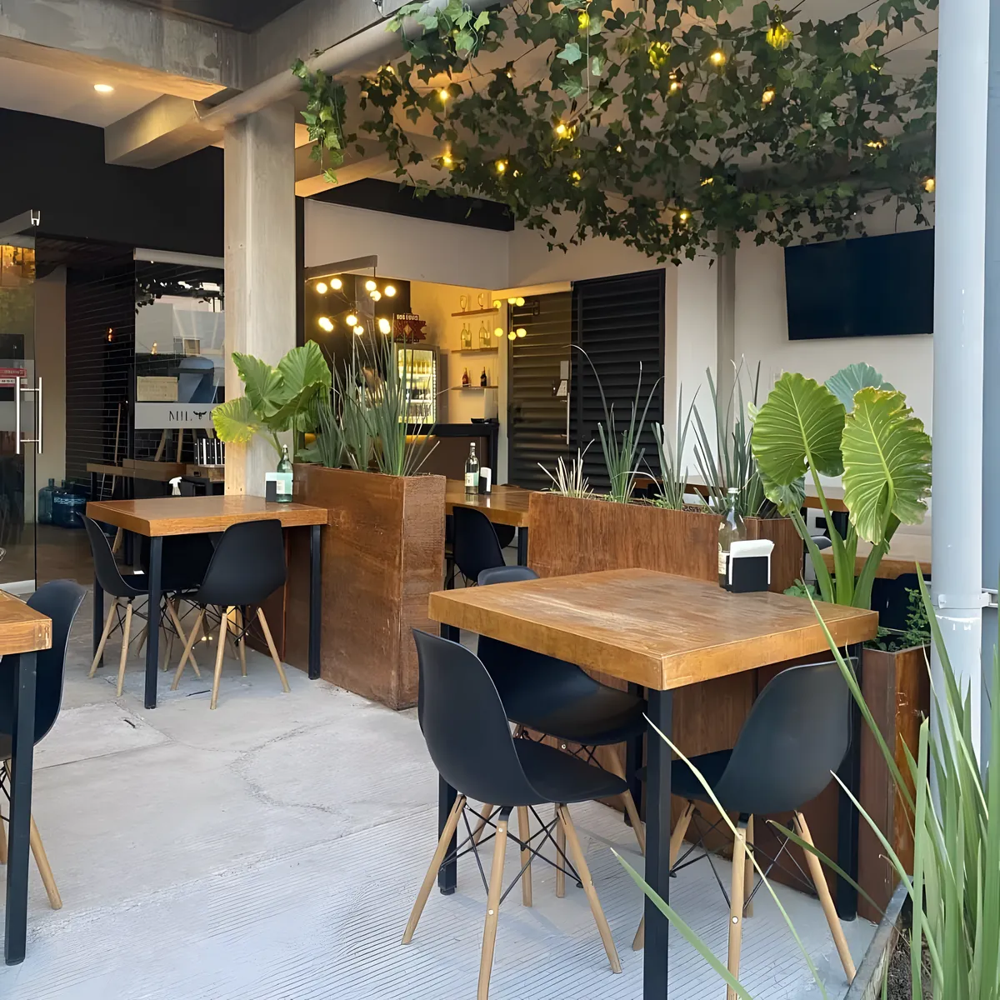
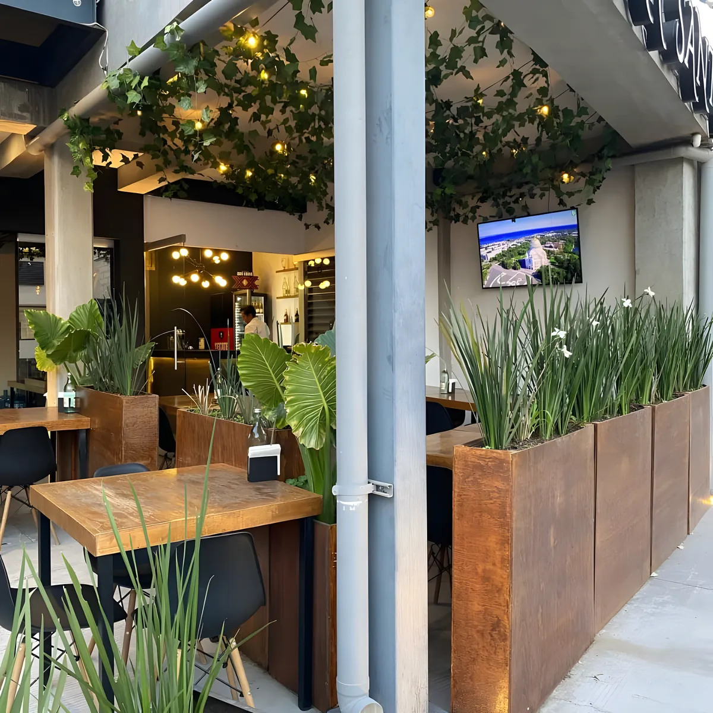

Parrilla & Bistro · Aguascalientes
Cortes al carbón, terraza de noche.
Parrilla argentina y cocina italiana en Jardines de la Asunción.
- 5.0 en Google
- $200 a $300por persona
- Terrazacon calentador

La terraza
Noches de terraza.
Enredadera, focos cálidos y calentador de torre. El mejor ambiente, en nuestra terraza.
Reserva directa
Aparta tu mesa.
Cuatro datos y te confirmamos por WhatsApp.

Tu pedido
Escribe tu número de mesa para que te lo lleven.
Te confirmamos precios y tiempo por WhatsApp o con tu mesero.
Tierra Santa · Parrilla & Bistro
Mesa
0
Hora00:00

Recomendado del mes
Chile en nogada.
Nogada cremosa de nuez de Castilla y granada fresca. Solo por 30 días.
En el restaurante o para llevar.

Eventos y grupos
Tu festejo, en la terraza.
Cumpleaños, comidas de empresa y grupos grandes. Cuéntanos y te armamos la mesa.
Quiénes somos
Alta cocina & grill.
Parrilla argentina y cocina italiana. Cortes premium y cocina bistro, al sur de la ciudad.


5.0
de calificación en Google

- Terraza con calentador
- Estacionamiento
- Pet friendly
- Wi-Fi gratis
- Zona para fumar
- Pantallas
- Tarjeta de crédito y débito
- Para llevar
Reseñas en Google
5.0 estrellas.
Lo que dicen quienes ya vinieron a comer.
“Aquí sí que se come delicioso. ¡Me encantó todo! Y la presentación 10/10.”
Mariana Ruiz de Vivar Google
“Es mi restaurante favorito al sur de la ciudad, tiene platillos variados y muy deliciosos.”
Montserrat Hernández Bernal Google
“Un lugar muy tranquilo, dónde el servicio acoge de manera increíble… Vale la pena.”
Iván González Google
“Excelente servicio, las parrilladas deliiii!!!!!!!”
Rosa María Martínez Google
“Todos los platillos exquisitos, es la mejor opción para comer al sur de la ciudad.”
Cesar Enrique Marquez Cabrera Google
Visítanos
Jardines de la Asunción.
Prol. Josefa Ortiz de Domínguez 503Jardines de la Asunción, 20270
Aguascalientes, Ags.
Cerca del INEGI y del Museo Descubre. Hay estacionamiento.